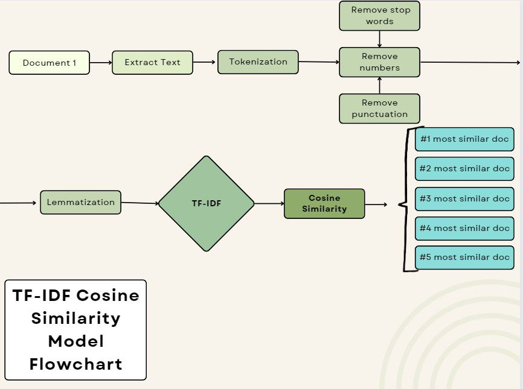

Welcome to my midterm project showcase! Here, I will provide a brief description of my project and its key features.
Problem
Given a dataset with 50 text files, we were tasked with building a machine learning model that was capable of predicting the similarity between each of the 50 documents. Our goal was to create the most accurate model in which document similarity could be calculated. In order to achieve this, we incorporated as much preprocessing as possible to prevent the machine learning model from basing similarity on punctuation, capitalization, or articles (the/a/an).
Preprocessing
We had a dataset of 50 documents given to us by William and Mary College, which covered a wide breadth of information regarding conservation and ecology. In order to have an accurate machine-learning model, our data needed to be clean. To do so, we incorporated several preprocessing steps:
- Remove articles (a/an/the)
- Make all words lowercase
- Finds and removes stopwords
- Remove punctuation
- Lemmatize nouns, verbs, and adjectives
Features
We first needed to vectorize our document text from words to numbers so that the machine-learning model could run on it. We tried two vectorizing techniques, LDA (Latent Dirichlet allocation), which extracts topics latent to the paper, and TF-IDF, which extracts frequently occurring keywords. One of the reasons why we initially decided on using the TF-IDF vectorizer is because it includes the TF-IDF transformer, which is well known for document retrieval. We also chose TF-IDF over LDA because we were looking for a machine-learning model that could find keywords (such as hunting, deer, river) amongst the documents, and match document similarity based on articles that have a high percent of the same frequently occurring keywords.
After initializing the TF-IDF and applying the matrix function, we were left with the TF-IDF (term frequency-inverse document) matrix. We then decided to use cosine similarity to find document similarity. Cosine similarity is a metric that measures the cosine of the angle between two vectors. By using TF-IDF to vectorize our document into numbers, we were able to use cosine similarity as a metric to measure the similarity of term frequency between each of the documents.
The final portion of our code calculates the similarity between documents and stores them in a dictionary called “similarity_scores”. The code iterates over all document pairs using nested loops. For each pair, it retrieves the similarity score from the similarity matrix. It then assigns this similarity score to the corresponding document pair key in the similarity_scores dictionary.
Finally, the function returns the similarity_scores dictionary containing the similarity scores for all document pairs.
Models
We decided to stick with an NLP model because NLP models are the most widely used for various text-related tasks such as text classification, word embedding, sequence labeling, and speech recognition. There are also many NLP techniques for text classification including Bag of Words, Ngrams, TF-IDF, and word2vec. TF-IDF and cosine classification, both types of techniques used for NLP models, were the most efficient for our dataset as we were trying to use text classification to find term frequency, thus allowing us to calculate document similarity.
Results
Click here to view the project in Google Colab
Analysis
Looking at the code, the results show the document similarity between each of the 50 documents as a decimal value. However, the code does not print out the similar frequently occurring keywords between the documents. This raises an issue since we are taking the code’s document similarity values at face-value with no proof as to what gave rise to those values. To check that the document similarity values seem reasonable, we decided to read through the articles where two documents shared a high document similarity value or low document similarity value. We chose to read through the articles rather than simply looking at the title because they may cover similar topics despite not sharing a title with the same text.
Document 11 and Document 38 supposedly shared a 0.05507916580572254 similarity, which is very low. Document 11 was titled “Reducing elasmobranch bycatch: Laboratory investigation of rare earth metal and magnetic deterrents with spiny dogfish and Pacific halibut” and described experiments conducted to test the efficacy of rare earth magnets and metals in reducing attacks on and consumption of bait by spiny dogfish. It also discusses the potential applications and limitations of using cerium mischmetal as a deterrent for reducing spiny dogfish bycatch. Document 38 was titled “TRAINING DEER TO AVOID SITES THROUGH NEGATIVE REINFORCEMENT” and conducted a series of trials to investigate whether mild electric shock could induce place avoidance in deer. It also highlighted limitations and considerations about the study, as well as concerns about increasing deer interactions with domestic animals. After reading both texts thoroughly, it was evident that neither text remotely shared any similar background, experiment, or evidence.
Document 42 and 20 supposedly shared a 0.7134682412624841 similarity, one of the highest document similarity values in the directory. Document 42 was titled “Wolf Depredation Trends and the Use of Fladry Barriers to Protect Livestock in Western North America” and focused on the issue of wolf depredation on domestic animals, particularly sheep and cattle, in Alberta, Canada, and Idaho, Montana, and Wyoming, United States. The study concluded that fladry barriers were effective in deterring captive and wild wolves for varying durations. The paper talked about concepts relating to behavioral analysis and cost-effective tools to maintain strategies to mitigate the problem with livestock. Document 20 was titled “Testing fladry as a nonlethal management tool for wolves and coyotes in Michigan” and discusses the potential conflicts between gray wolves and humans, particularly in agricultural landscapes. The research described in the passage highlights the potential effectiveness of fladry as a nonlethal management tool to reduce predator visitation and livestock depredations. It also discusses the development of management practices to find safe and effective methods for mitigating conflicts between wolves and humans in agricultural landscapes.
Both documents cover issues relating to a reduction in wolf populations attributed to their conflict with humans, as well as the use of flandry barriers to mitigate these issues. They seem to share a high document similarity based on text analysis, thus validating the code’s document similarity value.
Since the two documents with a low similarity seem to not share any significant background, information, or evidence, and the two documents with a moderate-high similarity share a similar topic and study, it seems that our machine-learning model was reasonably accurate.
Image

Code